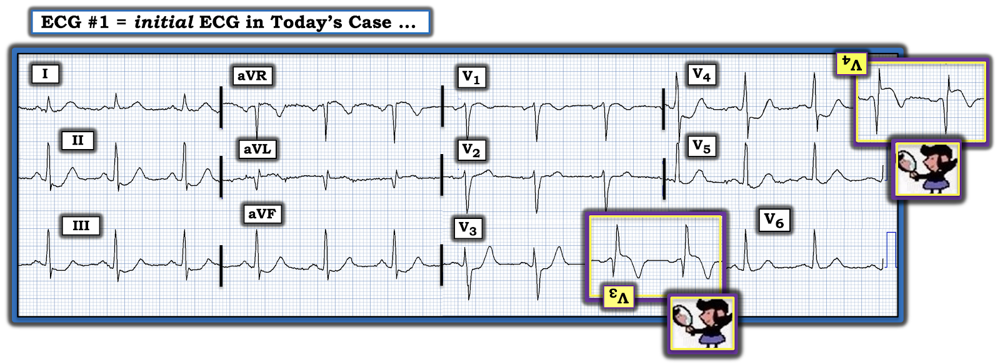
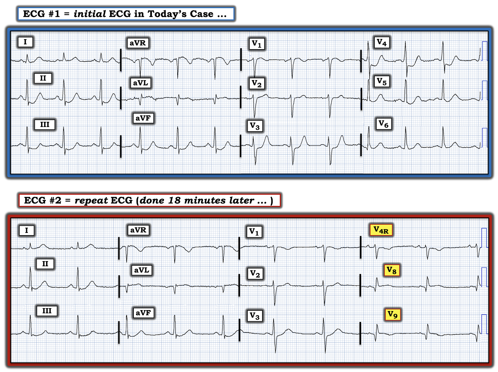

ECG Blog #351 — Các chuyển đạo phía sau ...
======================================
— Xem ECG Blog #406 — để xem phần trình bày Video về ca này!
======================================
Điện tâm đồ ở Hình-1 — được ghi ở một người đàn ông lớn tuổi, trước đó khỏe mạnh, đã gọi EMS (đội cấp cứu ngoài viện – Emergency Medical Services) vì "tức ngực" bắt đầu từ ~1 giờ trước. Với bệnh sử này:
CÂU HỎI:
- BẠN sẽ đọc điện tâm đồ ở Hình-1 như thế nào?
- Có nên kích hoạt phòng thông tim (cath lab) không?

SUY NGHĨ CỦA TÔI về điện tâm đồ ở Hình-1:
Nhịp ở điện tâm đồ #1 là nhịp xoang, tần số ~75/phút. Về các khoảng — khoảng PR bình thường — QRS không rộng — và QTc nhiều nhất chỉ kéo dài ở mức giới hạn. Trục mặt phẳng trán bình thường, khoảng +70 độ. Không có lớn các buồng tim.
Về Thay đổi Q-R-S-T:
- Có sóng Q lớn và rộng ở chuyển đạo aVL. Không có sóng Q nào khác.
- Sự tăng tiến sóng R phù hợp — với vùng chuyển tiếp (nơi sóng R trở nên cao hơn độ sâu của sóng S) xảy ra bình thường giữa các chuyển đạo V3-V4.
Về Thay đổi sóng ST-T:
- ĐIỂM THEN CHỐT (PEARL) #1: Những dấu hiệu đáng chú ý nhất trên bản ghi hôm nay nằm ở chuyển đạo V4. Hình dạng đoạn ST dốc xuống "dạng bậc thềm" (shelf-like) ở chuyển đạo này, đi kèm phần cuối sóng T dương, ở một bệnh nhân đau ngực mới khởi phát — gần như tự nó đã đủ để chẩn đoán OMI thành sau cấp (nhồi máu cơ tim do tắc – Occlusion-based Myocardial Infarction).
- Ủng hộ mạnh mẽ cho nhận định của tôi từ chuyển đạo V4 — là hình dạng của chuyển đạo V3 kế bên. Tuy ST chênh xuống ở chuyển đạo V3 có phần ít hơn (và đoạn ST ở đây giờ dốc lên nhẹ) — nhưng phần cuối sóng T ở đây giờ lại dương hơn đáng kể.
- "Chuyển đạo kế bên" còn lại của V4 là chuyển đạo V5. Dù không bất thường bằng V3,V4 — chuyển đạo V5 cho thấy ST chênh xuống "dạng lòng chảo" (scooped) kín đáo nhưng có thật.
- ĐIỂM THEN CHỐT (PEARL) #2: Ở bệnh nhân đau ngực mới xuất hiện — thấy ST chênh xuống tối đa ở các chuyển đạo V2 đến V4 phải nghĩ tới OMI thành sau cấp cho đến khi chứng minh được điều ngược lại. Điều này giúp phân biệt quan trọng với SEI lan tỏa (thiếu máu cục bộ dưới nội tâm mạc – SubEndocardial Ischemia) — trong đó ST chênh xuống gần tương đương ở nhiều chuyển đạo, kèm ST chênh lên ở chuyển đạo aVR (Xem ECG Blog #271).
- ĐIỂM THEN CHỐT (PEARL) #3 (Vượt ra ngoài phần cốt lõi): Có một bất thường kín đáo nhưng có thật ở chuyển đạo V2 — đó là đoạn ST ở chuyển đạo V2 phẳng (tức là không chênh lên cũng không chênh xuống). Điều này bất thường — vì phần lớn (đa số) thời gian, trên một bản ghi bình thường, đoạn ST ở chuyển đạo V2 chênh lên nhẹ dạng dốc lên. Đoạn ST phẳng ở chuyển đạo V2 — nhiều khả năng nhất là hậu quả của tác động "làm giảm" (đối kháng) từ OMI thành sau cấp, vốn gây ra một mức ST chênh xuống.
- Đoạn ST ở chuyển đạo V1 dạng vòm (coving) và chênh lên nhẹ. Ý nghĩa của dấu hiệu này chưa rõ nếu chỉ dựa vào bản ghi này.
- Chuyển đạo V6 không có gì đặc biệt.
- Ở các chuyển đạo chi — Có ST chênh xuống "dạng lòng chảo" kín đáo nhưng có thật kèm phần cuối sóng T dương ở từng chuyển đạo thành dưới.
- Đoạn ST dạng vòm kín đáo ở chuyển đạo aVL (kèm ST chênh lên nhẹ và gợi ý phần cuối sóng T đảo ngược) — có vẻ là thay đổi soi gương (reciprocal) của hình dạng sóng ST-T ở các chuyển đạo thành dưới.
- Tôi cho rằng chuyển đạo I không có giá trị chẩn đoán.
Điện tâm đồ #1 — Tổng Hợp Tất Cả Lại:
Như đã đề cập ở trên — ở một bệnh nhân lớn tuổi đau ngực mới khởi phát — thấy ST chênh xuống tối đa ở chuyển đạo V3 và V4, kèm các dấu hiệu kín đáo nhưng có thật ở các chuyển đạo kế bên — là chẩn đoán OMI thành sau cấp cho đến khi chứng minh được điều ngược lại. Xin nhấn mạnh: Ở bệnh nhân đau ngực mới xuất hiện — chỉ riêng điện tâm đồ này đã đủ lý do để kích hoạt phòng thông tim ngay!
- Tuy không thể biết từ một bản ghi duy nhất này liệu sóng Q lớn và rộng ở chuyển đạo aVL là mới hay cũ — nhưng ST dạng vòm đi kèm, với chênh lên nhẹ và gợi ý phần cuối sóng T đảo ngược — gợi ý tổn thương thành bên cao cấp. Điều này được củng cố bởi ST chênh xuống soi gương ở từng chuyển đạo thành dưới.
- Về dự đoán động mạch "thủ phạm" — OMI thành sau và thành bên cao cấp nghi ngờ khi không có ST chênh lên ở các chuyển đạo thành dưới gợi ý LCx (động mạch mũ trái – Left Circumflex) là động mạch bị tắc cấp (đặc biệt là nhánh bờ tù thứ 1 hoặc thứ 2).
- ĐIỀU CỐT LÕI: Dù động mạch "thủ phạm" rốt cuộc là động mạch nào — điểm quan trọng là ở bệnh nhân đau ngực mới xuất hiện — điện tâm đồ #1 tự nó đã chẩn đoán OMI cấp cho đến khi chứng minh được điều ngược lại. Cần kích hoạt phòng thông tim.
ĐIỂM THEN CHỐT (PEARL) #4: Sử dụng Nghiệm pháp "Soi gương" (Mirror Test)
Tôi ưa dùng "nghiệm pháp soi gương" (Mirror Test) — như một công cụ trực quan giúp nhận ra nhồi máu cơ tim thành sau cấp. Điều này càng củng cố thêm cho "kết luận cốt lõi" ở trên, mà như tôi đã nhấn mạnh ở trên, lẽ ra đã phải đạt được rồi.
- Nguyên lý của nghiệm pháp này rất đơn giản: Nó dựa trên thực tế là hình ảnh soi gương của các chuyển đạo thành trước — cho biết bản chất hoạt động điện như được nhìn từ thành sau của thất trái (Để biết thêm về nghiệm pháp "Soi gương" — Xem Audio Pearl trong PHẦN BỔ SUNG bên dưới).
- Lưu ý rằng tôi đã lật theo chiều dọc các chuyển đạo trước V2 và V3 trong các ô chèn màu TÍM mà tôi thêm vào Hình-2 (để cho thấy hình ảnh soi gương của 2 chuyển đạo này). Chẳng phải hình dạng của ST chênh xuống "dạng bậc thềm" và phần cuối sóng T dương ở chuyển đạo V3 và V4 của Hình-2, khi được lật theo chiều dọc (như cách nhìn trong nghiệm pháp soi gương), gợi ý một hình dạng và mức độ ST chênh lên đáng lo ngại — cũng như sóng T đảo ngược đã sâu sao?


Điện tâm đồ ghi lại cho thấy gì?
Đội EMS đã ngay lập tức nhận ra cần phải đề nghị kích hoạt phòng thông tim và khẩn trương chuyển bệnh nhân tới bệnh viện.
- Trên đường đi — đội EMS ghi điện tâm đồ thứ 2 (trình bày ở Hình-3) — trong đó thay các chuyển đạo V4,V5,V6 bằng chuyển đạo V4R bên phải và các chuyển đạo V8 và V9 phía sau.
CÂU HỎI:
- BẠN sẽ đọc điện tâm đồ #2 như thế nào? — biết rằng nó được ghi 18 phút sau điện tâm đồ #1 (khi bệnh nhân mô tả mức độ đau ngực đã giảm).
- Những Ưu & Nhược điểm có thể có của việc thay V4,V5,V6 bằng các chuyển đạo V4R, V8, V9 là gì?


Ưu & Nhược điểm có thể có của các chuyển đạo bổ sung:
Tôi sẽ không bao giờ phủ nhận lợi ích tiềm năng của việc ghi thêm chuyển đạo khi mục đích là: i) Tăng sự tự tin của người điều trị vào nhận định của mình; — hoặc — ii) Vì (những) người điều trị cảm thấy cần "thuyết phục" bác sĩ tim mạch trực rằng các chuyển đạo phía sau cho thấy ST chênh lên như đang tìm kiếm, để "biện minh" cho việc đưa bệnh nhân vào phòng thông tim. Dù vậy — các thực tế lâm sàng là như sau:
- Ghi thêm chuyển đạo tốn thêm một chút thời gian. Vì vậy — nhân viên EMS phải "cân nhắc" giữa nhu cầu khẩn trương chuyển bệnh nhân tới khoa cấp cứu (ED) — với — việc bỏ ra thêm chút thời gian đó vì bác sĩ tim mạch trực của bạn là người sẽ không kích hoạt phòng thông tim nếu không có ST chênh lên.
- Thực tế là không hề có ST chênh lên trên điện tâm đồ 12 chuyển đạo chuẩn khi nhồi máu thành sau đơn độc. Dù vậy, như trường hợp bệnh nhân hôm nay — điện tâm đồ #1 tự nó đã chẩn đoán được (mà không cần ST chênh lên) — tắc động mạch vành cấp (tức là một ca OMI cấp = nhồi máu cơ tim do tắc – Occlusion-based Myocardial Infarction).
- Trong bài đăng ngày 1 tháng 4 năm 2018 trên Dr. Smith’s ECG Blog — các BS Meyers, Weingart và Smith đã công bố OMI Manifesto (Tuyên ngôn OMI) của họ — trong đó họ ghi nhận chi tiết khái niệm cực kỳ quan trọng rằng xử trí nhồi máu cơ tim cấp bằng cách phân chia thành “STEMI” và “non-STEMI” là một cách tiếp cận sai lầm không thể cứu vãn.
- OMI Manifesto của họ trình bày chi tiết việc dùng tiêu chuẩn STEMI chuẩn dẫn tới mức độ thiếu chính xác không thể chấp nhận được, với ước tính 25-30% trường hợp tắc động mạch vành cấp bị bỏ sót! Thế nhưng bất chấp khiếm khuyết đáng kể này của mô hình STEMI — một số lượng lớn (nếu không muốn nói là đa số rõ rệt) bác sĩ lâm sàng vẫn tiếp tục áp dụng các tiêu chuẩn lỗi thời khi đọc điện tâm đồ, khi từ chối cân nhắc thông tim sớm để chẩn đoán xác định và điều trị tái tưới máu chỉ vì định nghĩa STEMI cấp dựa trên milimét không được thỏa mãn.
- Bài đăng ngày 3 tháng 9 năm 2020 trên Dr. Smith's ECG Blog giới thiệu bản tóm tắt dài 17 phút của BS Meyers về OMI Manifesto này, với đầy đủ tài liệu dẫn chứng.
- Tôi tóm tắt các điểm CHÍNH của OMI Manifesto trong bài đăng ngày 31 tháng 7 năm 2020 trên Dr. Smith's ECG Blog. Cho rõ ràng, trong Hình-4 (bên dưới, trong PHẦN BỔ SUNG) — tôi đã liệt kê các dấu hiệu điện tâm đồ cần tìm gợi ý OMI cấp — mặc dù bệnh nhân đau ngực mới xuất hiện của bạn không thỏa đủ tiêu chuẩn để được xếp là "STEMI".
Về các chuyển đạo phía sau:
Dù nhiều người điều trị (kể cả nhiều bác sĩ tim mạch) ưa dùng các chuyển đạo phía sau — thực tế là biên độ QRST ở các chuyển đạo phía sau bị giảm so với biên độ hình ảnh soi gương của các chuyển đạo thành trước. Đó là vì để đánh giá hoạt động điện từ các điện cực V7,V8,V9 đặt ở phía sau — tín hiệu phải đi qua lớp cơ lưng dày (với tác dụng làm giảm biên độ đáng kể) trước khi các chuyển đạo phía sau này ghi được hoạt động điện của tim.
- Xin nhấn mạnh: Tôi không phản đối những ai thích ghi các chuyển đạo phía sau vì họ thấy điều này giúp ích cho việc đọc điện tâm đồ. Tôi chỉ nói rằng chỉ với một chút luyện tập dùng nghiệm pháp soi gương (Xem ĐIỂM THEN CHỐT #4 và Hình-2 ở trên) — thì sẽ có được thông tin tương đương nhanh hơn mà không cần gắn thêm chuyển đạo. (Thực ra — còn có được nhiều thông tin hơn — vì có những lúc nghiệm pháp soi gương dương tính dù các chuyển đạo phía sau âm tính).
Về các chuyển đạo bên phải:
Như đã bàn trong ECG Blog #190 — cách TỐT NHẤT để chẩn đoán nhồi máu thất phải (RV MI) cấp là thấy ST chênh lên ở các chuyển đạo bên phải. Điện tâm đồ 12 chuyển đạo chuẩn có thể gợi ý tổn thương thất phải cấp (tức là Nếu, trong bối cảnh ST chênh xuống ở V2,V3 do nhồi máu cơ tim thành sau cấp — lại có ST chênh lên bất ngờ ở chuyển đạo V1). Nhưng chỉ riêng nó — điện tâm đồ 12 chuyển đạo chuẩn không thể loại trừ khả năng tổn thương thất phải cấp
- Dù vậy — Vì nhồi máu thất phải cấp hầu như luôn do tắc cấp RCA (động mạch vành phải – Right Coronary Artery) — nên (theo định nghĩa) — phải có ST chênh lên ở các chuyển đạo thành dưới ở những bệnh nhân có kèm tổn thương thất phải cấp. Việc hoàn toàn không có ST chênh lên như vậy ở các chuyển đạo thành dưới của điện tâm đồ #1 — gần như loại trừ khả năng nhồi máu thất phải cấp trong ca hôm nay (tức là nhồi máu thất phải đơn độc rất hiếm!).
Chúng ta học được gì từ điện tâm đồ #2?
Lý do tôi đặt 2 điện tâm đồ của ca hôm nay cạnh nhau trong Hình-3 (ở trên) — là vì làm như vậy giúp việc so sánh từng chuyển đạo với chuyển đạo dễ hơn nhiều.
- Ở các chuyển đạo chi — Trục mặt phẳng trán tương tự ở cả điện tâm đồ #1 và điện tâm đồ #2. Điều này cho biết việc so sánh từng chuyển đạo với chuyển đạo ở các chuyển đạo chi sẽ có giá trị!
- Tần số tim ở điện tâm đồ #2 chậm hơn một chút.
- ST chênh xuống có vẻ ít hơn một chút ở từng chuyển đạo thành dưới.
- Ở các chuyển đạo trước tim — Chúng ta chỉ có thể so sánh V1,V2,V3, vì V4R,V8,V9 đã thay cho các chuyển đạo trước tim bên V4,V5,V6 ở điện tâm đồ #2. Dù vậy — cả mức ST chênh xuống tại điểm J lẫn chiều cao của sóng T tối cấp (hyperacute) ở chuyển đạo V3 đều rõ ràng ít hơn ở điện tâm đồ #2!
- NHẬN ĐỊNH: Vì bệnh nhân cho biết đau ngực đang giảm vào khoảng thời điểm ghi điện tâm đồ #2 — sự cải thiện hình dạng sóng ST-T này gợi ý mạch máu "thủ phạm" có thể đang trong quá trình tự mở thông trở lại.
ĐIỂM THEN CHỐT (PEARL) #5: Thường bị bỏ qua (nhưng có tầm quan trọng lâm sàng then chốt) — là nhu cầu đối chiếu chặt chẽ giữa các điện tâm đồ liên tiếp và mức độ nặng tương đối của triệu chứng đau ngực vào đúng thời điểm ghi từng điện tâm đồ.
- Lý do việc đối chiếu chặt chẽ này quan trọng đến vậy — là vì nó cho biết thông tin MẤU CHỐT về việc động mạch bị tắc cấp đã tự thông lại — hay — nhiều khả năng vẫn còn tắc.
- Điểm MẤU CHỐT: Quá trình tắc động mạch vành cấp thường không phải kiểu "tất cả hoặc không có gì". Thay vào đó — nhiều bệnh nhân có "kiểu ngắt quãng" (stuttering pattern) — trong đó động mạch bị tắc cấp có thể tự thông lại, rồi sau đó lại tự tắc lại. Và đôi khi, diễn tiến là tự thông — rồi đóng lại — rồi thông lại — rồi lại đóng lại — với quá trình qua lại này xảy ra nhiều lần — cho đến khi cuối cùng, vào một thời điểm nào đó, mạch "thủ phạm" đạt tới trạng thái "sau cùng" là thông hoặc tắc.
- ST chênh lên dai dẳng kèm đau ngực dữ dội đang tiếp diễn gợi ý động mạch "thủ phạm" vẫn còn tắc.
- Ngược lại — Đau ngực giảm đi xảy ra cùng lúc ST chênh lên đang hồi phục (và khi sóng T tái tưới máu xuất hiện) — gợi ý động mạch "thủ phạm" đã tự thông (Xem Audio Pearl trong PHẦN BỔ SUNG của bài hôm nay ở dưới để biết thêm về điều này).
ĐIỂM THEN CHỐT (PEARL) #6: Nếu quyết định ghi thêm các chuyển đạo bổ sung khi đến lúc làm lại điện tâm đồ — Hãy NHỚ CHẮC ghi một điện tâm đồ 12 chuyển đạo đầy đủ lần 2 trước khi ghi các chuyển đạo bên phải hoặc chuyển đạo phía sau! Nếu không — bạn sẽ mất dữ liệu.
- Trớ trêu thay trong ca hôm nay — Nếu mục đích ghi các chuyển đạo phía sau ở điện tâm đồ #2 là với hy vọng thuyết phục bác sĩ tim mạch trực rằng có ST chênh lên ở V8,V9 — thì việc đau ngực đang giảm và các thay đổi ST-T cấp ở các chuyển đạo dưới và ở V3 có vẻ đang hồi phục — nhiều khả năng cũng sẽ khiến ST chênh lên ở V8,V9 ít hơn.
- Có lẽ sẽ dễ hơn nhiều để khẳng định các thay đổi ST-T cấp đang hồi phục ở điện tâm đồ #2 nếu chuyển đạo V4 chuẩn được ghi trong điện tâm đồ làm lại này.
- Ghi một điện tâm đồ 12 chuyển đạo đầy đủ trước khi ghi các chuyển đạo bổ sung sẽ đạt được 2 điều: i) Ghi nhận sự thay đổi của các dấu hiệu ST-T trên các điện tâm đồ liên tiếp ở một bệnh nhân có mức độ triệu chứng thay đổi chính là định nghĩa của thay đổi ST-T "động" (dynamic) — và, ở một bệnh nhân đau ngực mới, riêng dấu hiệu này đã là chỉ định thông tim ngay! — và, ii) Thấy các thay đổi ST-T cấp giảm đi ở chuyển đạo V4 chuẩn trên điện tâm đồ #2 — sẽ giúp chúng ta chuẩn bị tốt hơn để không trông đợi nhiều (nếu có) ST chênh lên ở các chuyển đạo phía sau.
- Hóa ra V8 và V9 ở điện tâm đồ #2 có cho thấy ST dạng vòm và chênh lên nhẹ — nhưng rất ít.
DIỄN TIẾN CA BỆNH:
Ca hôm nay là một ví dụ xuất sắc về sự chăm sóc tuyệt vời của đội cấp cứu ngoài viện (EMS) — đã nhanh chóng nhận ra OMI cấp — và — nhanh chóng nhận ra nhu cầu thông tim ngay. Bác sĩ tim mạch trực đã tiến hành thông tim cấp cứu vì đau ngực dai dẳng và các thay đổi điện tâm đồ bất thường (tôi không có các bản ghi liên tiếp sau đó của bệnh nhân này).
- Thông tim cho thấy bệnh nhiều nhánh mạch vành — với tắc cấp nhánh OM thứ 1 (nhánh bờ tù — Obtuse Marginal branch) của động mạch LCx (động mạch mũ trái — Left Circumflex), được xem là tổn thương "thủ phạm" cấp. Một stent phủ thuốc đã được đặt — và bệnh nhân có vẻ diễn tiến tốt!
==================================
LỜI CẢM ƠN: Xin cảm ơn Tomasz Numrych (Maryland, Hoa Kỳ) đã chia sẻ ca bệnh và bản ghi này.
==================================
PHẦN BỔ SUNG (18/12/2022):
- Dưới đây là một loạt đường link và tài liệu khác liên quan đến việc xác định động mạch "thủ phạm" — cùng quan điểm của tôi về việc thay thuật ngữ "STEMI" bằng "OMI", với hy vọng tăng đáng kể khả năng phát hiện tắc động mạch vành cấp.
Tải PDF miễn phí các mục liên quan trong ECG-2014-ePub của tôi:
- Tệp PDF: Tổng quan về tuần hoàn vành và động mạch "thủ phạm" trong nhồi máu cơ tim cấp —
- Tệp PDF: Nhồi máu cơ tim thành sau và "nghiệm pháp soi gương" (Mirror Test) —


ECG Media PEARL #60 (8:30 phút Audio) — Ôn lại cách dùng "nghiệm pháp soi gương" (Mirror Test) để dễ nhận biết: i) Nhồi máu cơ tim thành sau cấp; ii) Nhồi máu cơ tim bên cao hoặc thành dưới cấp (tức là mối quan hệ soi gương "kỳ diệu" giữa III và aVL); và, iii) ST chênh lên ở các chuyển đạo trước do LVH (không phải dấu hiệu của nhồi máu thành trước).

ECG Media PEARL #10 (10 phút Audio) — ôn lại khái niệm vì sao thuật ngữ “OMI” ( = nhồi máu cơ tim do tắc — Occlusion-based MI) nên thay thế thuật ngữ quen thuộc hơn là STEMI — và — ôn lại những điều cơ bản về cách dự đoán động mạch "thủ phạm".

ECG Media PEARL #11 (6 phút Audio) — Ôn lại cách nhận biết LIỆU động mạch “thủ phạm” (tức là động mạch bị tắc cấp) đã được tái tưới máu hay chưa, dựa vào tiêu chuẩn lâm sàng và điện tâm đồ.
===============================
Các bài ECG Blog liên quan đến ca hôm nay:
- ECG Blog #205 — Ôn lại Cách tiếp cận Hệ thống của tôi trong đọc điện tâm đồ 12 chuyển đạo.
- ECG Blog #193 — minh họa cách dùng nghiệm pháp soi gương để dễ nhận biết nhồi máu cơ tim thành sau cấp. Bài này ôn lại những điều cơ bản để dự đoán "Động mạch Thủ phạm" (đồng thời ôn lại vì sao thuật ngữ "STEMI" — nên được thay bằng "OMI" = Occlusion-based MI).
- ECG Blog #285 — một ví dụ khác về nhồi máu cơ tim thành sau cấp (với nghiệm pháp soi gương dương tính).
- ECG Blog #246 — một ví dụ khác về nhồi máu cơ tim thành sau cấp (với nghiệm pháp soi gương dương tính).
- ECG Blog #80 — ôn lại việc dự đoán động mạch "thủ phạm" (và đưa thêm một ca minh họa nghiệm pháp soi gương để chẩn đoán nhồi máu cơ tim thành sau cấp).
- ECG Blog #317 — ôn lại một ca khác về việc dùng (hay không dùng) các chuyển đạo phía sau.
- ECG Blog #184 — minh họa mối quan hệ đối ảnh soi gương "kỳ diệu" khi thiếu máu cục bộ cấp giữa III và aVL (được trình bày trong Audio Pearl #2 của bài này).
- ECG Blog #167 — một ca khác về mối quan hệ đối ảnh soi gương "kỳ diệu" giữa III và aVL giúp khẳng định OMI cấp.
- Bài đăng ngày 16 tháng 2 năm 2019 trên Dr. Smith's ECG Blog — Bình luận của tôi (ở cuối trang) nhấn mạnh giá trị của nghiệm pháp soi gương trong chẩn đoán nhồi máu cơ tim thành sau cấp.
- Chẩn đoán OMI từ điện tâm đồ đầu tiên — Các bản ghi liên tiếp với tái tưới máu tự phát — rồi tắc lại! — Xem Bình luận của tôi ở cuối trang trong bài đăng ngày 14 tháng 10 năm 2020 trên Dr. Smith's ECG Blog.
- OMI cấp không được bác sĩ phụ trách (Attending) chấp nhận — Xem Bình luận của tôi ở cuối trang trong bài đăng ngày 21 tháng 11 năm 2020 trên Dr. Smith’s ECG Blog.
- Một OMI khác bị bỏ sót (Bác sĩ tim mạch bị bó buộc bởi định nghĩa STEMI — OMI rõ ràng nhờ nghiệm pháp soi gương) — Xem Bình luận của tôi ở cuối trang trong bài đăng ngày 21 tháng 9 năm 2020 trên Dr. Smith’s ECG Blog.
- Nhận biết sóng T tối cấp — các nhóm chuyển đạo — một OMI (dù không phải STEMI) — Xem Bình luận của tôi ở cuối trang trong bài đăng ngày 8 tháng 11 năm 2020 trên Dr. Smith's ECG Blog.
- ECG Blog #271 — Ôn lại cách xác định đường nền của đoạn ST (kèm bàn luận về thực thể thiếu máu cục bộ dưới nội tâm mạc lan tỏa).
- ECG Blog #266 — Ôn lại cách phân biệt Nhồi máu cơ tim thành sau với sóng T deWinter (với phần cuối sóng T dương ở các chuyển đạo trước phản ánh sóng T "tái tưới máu" ).
- ECG Blog #258 — Cách "Định tuổi" một Nhồi máu dựa trên điện tâm đồ đầu tiên.
- ECG Blog #294 — Ôn lại cách nhận biết LIỆU động mạch "thủ phạm" đã được tái tưới máu hay chưa.
- ECG Blog #230 — Ôn lại cách so sánh các điện tâm đồ liên tiếp.
- ECG Blog #115 — Cho thấy thay đổi ST-T ngoạn mục có thể xảy ra chỉ trong vòng 8 phút.
- ECG Blog #268 — Cho thấy một ví dụ về sóng T tái tưới máu.
- ECG Blog #190 — Cách chẩn đoán nhồi máu thất phải (RV MI) cấp (và cách dùng chuyển đạo bên phải).